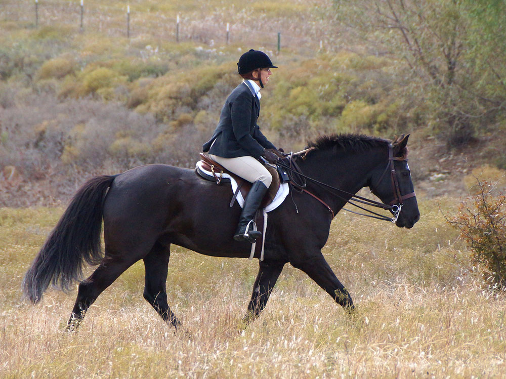

2013/2014
Fox Hunting on Miaren
It's been a long time coming, but this season
Miaren and I have made it out to almost every
hunt. We both can get excited, but he's been
out now without our safety blanket of Thuy and
it's been a whole lot of fun.
Out with a friend up on Thuy. Those first few hunts he had a lot of bounce to his
stride when I'd first mount up, but with Thuy there we never melted down.
This hunt there were three of us guarding the West side of the property.
Discussing the plan and watching the hounds work their way into the woods.
Discussing the property with the huntsman and master.

Trotting in after a few hours out.

Miaren mostly led the way. Sometimes Thuy would have to take over if Miaren lost
confidence.

Fall hunting. Miaren seems to like it, partly because treats are usually involved.

He gets gates as good as Thuy, but sometimes they aren't as easy because of his
height.
We tend to lead since I know where we need to be going.

Watching the hunt from a distance. He always knew where the hounds were.
Working our way through the valley.
Coming in to the hound trailer. He gets dark when his winter coat starts to come in.
We worked up to carrying the hunt whip and a radio. I'm still a bit tense when we
start out, but he's been great.
Staying to the back of the field. I want him to know that everyone can run off and
we don't automatically follow and keep up.
He is very aware of everything going on around us.
Formal hunt season here.This was our opening hunt.
Moving out across the field to check for hounds.

Bringing some puppies back. The new entries were just learning how to get back with
the pack.
Back with the rest of the field.

He was fine in the group.
Both of us relaxed and watching the hounds work.
Waiting for the hounds to finish at the pond.

I love this shot of us. He's a working horse now.

With the field.

Heading in.

On a loose rein and trusting him.
On this property we can see for quite a distance.

Cantering to keep up.

My hunt horse.